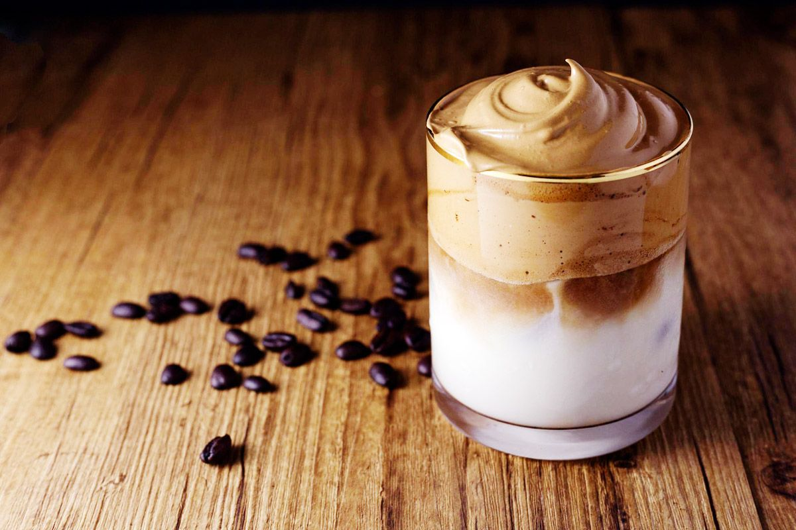
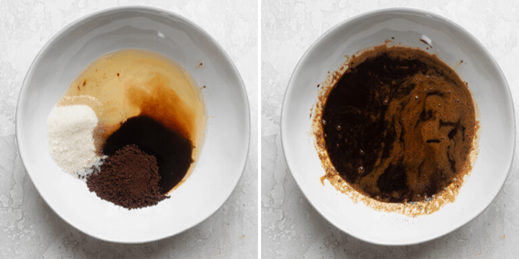
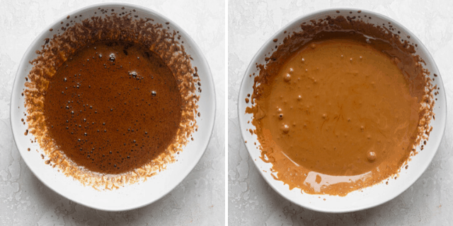
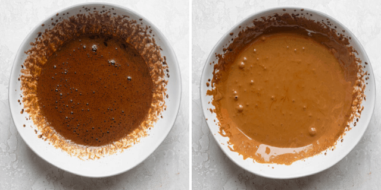

Dalgona Coffee

What is Dalgona Coffee?
This is a type of Korean coffee known as Dalgona coffee. It was recently popularized through a viral TikTok video showing how simple and delicious it is. It’s one of those recipes that is so easy to make, but looks really fancy. It’s a coffee shop type of coffee drink we can enjoy at home!
Ingredients:
- 2 tablespoons Instant Coffee
- 2 tablespoons Sugar
- 2 tablespoons Water
- 16 ounces Milk
Steps To Make Dalgona Coffee:
- Place the instant coffee, sugar and water all in a bowl
- Use a whisk, hand mixer or frother to combine! This will take 5-15 minutes, the consistency should be thick and light in color
- Place your milk in a glass and add the creamy coffee over top!

 

Enjoy!
Back To Homepage